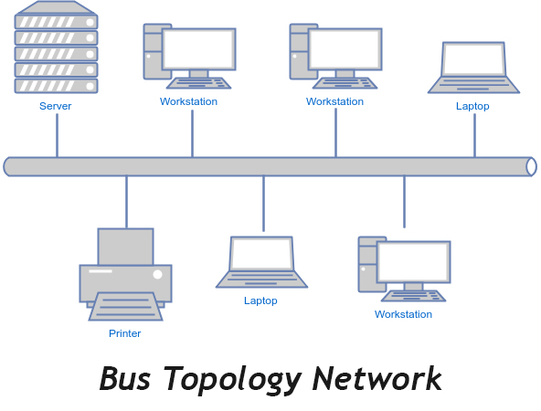
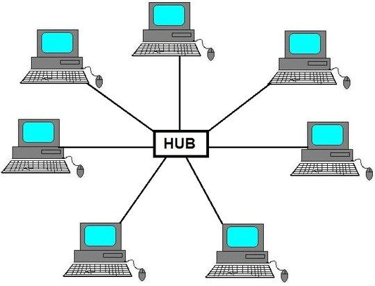
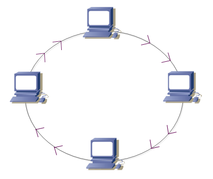

Поняття топології
Під топологією (компонуванням, конфігурацією, структурою) комп'ютерної мережі звичайно розуміється фізичне розташування комп'ютерів мережі один щодо іншого та спосіб їх з'єднання лініями зв'язку. Важливо відзначити, що поняття топології ставиться, насамперед, до локальних мереж, у яких структуру зв'язків можна легко простежити. У глобальних мережах структура зв'язків звичайно схована від користувачів і не надто важлива, тому що кожний сеанс зв'язку може виконуватися по своєму власному шляху.
Топологія мережі визначає не тільки фізичне розташування комп'ютерів, але, що набагато важливіше, характер зв'язків між ними, особливості поширення сигналів мережею. Саме характер зв'язків визначає ступінь відмовостійкості мережі, необхідну складність мережної апаратури, найбільш підходящий метод керування обміном, можливі типи середовищ передачі (каналів зв'язку), припустимий розмір мережі (довжина ліній зв'язку й кількість абонентів), необхідність електричного узгодження й багато чого іншого.
Коли в літературі згадується про топологію мережі, то можуть мати на увазі чотири зовсім різних поняття, що ставляться до різних рівнів мережної архітектури:
- Фізична топологія (тобто схема розташування комп'ютерів і прокладки кабелів). У цьому змісті, наприклад, пасивна зірка нічим не відрізняється від активної зірки, тому її нерідко називають просто «зіркою».
- Логічна топологія (тобто структура зв'язків, характер поширення сигналів мережею). Це, напевно, найправильніше визначення топології.
- Топологія керування обміном (тобто принцип і послідовність передачі права на захват мережі між окремими комп'ютерами).
- Інформаційна топологія (тобто напрямок потоків інформації, переданої мережею).
Найпоширеніші прості топології
Шина
«Шина» — топологія комп'ютерної мережі, яку часто називають також «лінійною шиною» (linear bus). У ній використовується один кабель, що іменується магістраллю або сегментом, до якого підключені всі комп'ютери мережі. Дана топологія є найбільш простою і поширеною реалізацією мережі.
- Термінатор (terminator)
- — поглинач енергії (зазвичай резистор) на кінці довгої лінії, опір якого дорівнює хвильовому опору даної лінії. Слово «термінатор» застосовується в комп'ютерному жаргоні, термінологічним синонімом йому є «узгоджене навантаження».
- Повторювач (repeater)
- — пристрій який повторює сигнал переданий йому на вхід
- Баррел-конектор (barrel connector)
- — пристрій який сполучає дві частини шини між собою
Топологія шина самою своєю структурою припускає ідентичність мережного устаткування комп'ютерів, а також рівноправність всіх абонентів по доступу до мережі. Комп'ютери в шині можуть передавати інформацію тільки по черзі, тому що лінія зв'язку в цьому випадку єдина. Якщо кілька комп'ютерів будуть передавати інформацію одночасно, вона спотвориться в результаті накладення (конфлікту, колізії). У шині завжди реалізується режим так називаного напівдуплексного (half duplex) обміну (в обох напрямках, але по черзі, а не одночасно).
У топології шина відсутній явно виражений центральний абонент, через який передається вся інформація, це збільшує її надійність (адже при відмові центра перестає функціонувати вся керована їм система). Додавання нових абонентів у шину досить просто й зазвичай можливо навіть під час роботи мережі. У більшості випадків при використанні шини потрібна мінімальна кількість сполучного кабелю в порівнянні з іншими топологіями.
Електричні сигнали розповсюджуються від одного кінця кабелю до іншого. Якщо не вживати ніякого спеціального заходу, сигнал, досягаючи кінця кабелю, віддзеркалиться і створюватиме перешкоди, не дозволяючи комп'ютерам здійснювати передачу. Тому на кінцях кабелю електричні сигнали необхідно гасити.
Для того, щоб запобігти віддзеркаленню електричних сигналів, на кожному кінці кабелю встановлюють термінатори (terminators), що поглинають ці сигнали. Будь-який кінець мережевого кабелю повинен бути до чого-небудь підключений: до комп'ютера або до баррел-конектора (його використовують для збільшення довжини кабелю). До будь-якого вільного, тобто ні до чого не підключеного, кінцю кабелю потрібно під'єднувати термінатор.
Фірми, що нормально розвиваються, постійно стикаються з необхідністю розширити мережу, іншими словами, збільшити ділянку, яку вона охоплює. У мережі з топологією «шина» кабель звичайно подовжують двома способами:
- Для з'єднання двох відрізків кабелі використовують баррел-конектор (barrel connector). Але зловживати ним не треба, оскільки сигнал при цьому слабшає. Краще купити один довгий кабель, чим сполучати декілька коротких. При великій кількості «стиковок» нерідко відбувається спотворення сигналу.
- Для з'єднання двох відрізків кабелю використовують повторювач (repeater). На відміну від конектора, він підсилює сигнал перед передачею його в наступний сегмент. Тому краще використовувати повторювач, чим баррел-конектор або навіть довгий кабель: сигнали на великі відстані підуть без спотворень.
Переваги
- Невеликий час установки мережі;
- Дешевизна (потрібно менше кабелю і мережевих пристроїв);
- Простота настройки;
- Вихід з ладу робочої станції не відбивається на роботі мережі.
Недоліки
- Несправності в мережі, такі як обрив кабелю і вихід з ладу термінатора, повністю блокують роботу всієї мережі;
- Складна локалізація несправностей;
- З додаванням нових робочих станцій падає продуктивність мережі.
Зірка
Зірка — це єдина топологія мережі з явно виділеним центром, до якого підключаються всі інші абоненти. Обмін інформацією йде винятково через центральний комп'ютер, на який лягає більше навантаження, тому нічим іншим, крім мережі, він, як правило, займатися не може. Зрозуміло, що мережне устаткування центрального абонента повинно бути істотно складнішим, чим устаткування периферійних абонентів. Про рівноправність всіх абонентів (як у шині) у цьому випадку говорити не доводиться. Звичайно центральний комп'ютер найпотужніший, саме на нього покладають всі функції по керуванню обміном. Ніякі конфлікти в мережі з топологією зірка в принципі неможливі, тому що керування повністю централізоване.
У центрі мережі з даною топологією міститься не комп'ютер, а спеціальний пристрій — концентратор або, як його ще називають, хаб (hub), що виконує ту ж функцію, що й репітер, тобто відновлює сигнали й пересилає їх в усі інші лінії зв'язку.
Виходить, що хоча схема прокладки кабелів подібна активній зірці, фактично мова йде про шинну топологію, тому що інформація від кожного комп'ютера одночасно передається до всіх інших комп'ютерів, а ніякого центрального абонента не існує. Безумовно, пасивна зірка дорожче звичайної шини, тому що в цьому випадку потрібний ще й концентратор. Однак вона надає цілий ряд додаткових можливостей, пов'язаних з перевагами зірки, зокрема, спрощує обслуговування й ремонт мережі. Саме тому останнім часом пасивна зірка усе більше витісняє зірку, що вважається малоперспективною топологією.
На відміну від шини, у зірці на кожній лінії зв'язку перебувають тільки два абоненти: центральний й один з периферійних. Найчастіше для їхнього з'єднання використовується дві лінії зв'язку, кожна з яких передає інформацію в одному напрямку, тобто на кожній лінії зв'язку є тільки один приймач й один передавач. Це так звана передача точка-точка. Все це істотно спрощує мережне встаткування в порівнянні із шиною й рятує від необхідності застосування додаткових, зовнішніх термінаторів.
Проблема загасання сигналів у лінії зв'язку також вирішується в зірці простіше, ніж у випадку шини, адже кожен приймач завжди одержує сигнал одного рівня. Гранична довжина мережі з топологією зірка може бути вдвічі більше, ніж у шині (тобто 2*Lпр), тому що кожний з кабелів, що з'єднує центр із периферійним абонентом, може мати довжину Lпр.
Переваги
Велика перевага зірки (як активної, так і пасивної) полягає в тому, що всі точки підключення зібрані в одному місці. Це дозволяє легко контролювати роботу мережі, локалізувати несправності шляхом простого відключення від центра тих або інших абонентів (що неможливо, наприклад, у випадку шинної топології), а також обмежувати доступ сторонніх осіб до життєво важливих для мережі точок підключення. До периферійного абонента у випадку зірки може підходити як один кабель (по якому йде передача в обох напрямках), так і два (кожний кабель передає в одному із двох зустрічних напрямків), причому останнє зустрічається набагато частіше.
Недоліки
Загальним недоліком для всіх топологій типу зірка (як активної, так і пасивної) є значно більша, ніж при інших топологіях, витрата кабелю. Наприклад, якщо комп'ютери розташовані в одну лінію, то при виборі топології зірка знадобиться в кілька разів більше кабелю, ніж при топології шина. Це істотно впливає на вартість мережі в цілому й помітно ускладнює прокладку кабелю.
Кільце
У комп'ютерній мережі з топологією «кільце» комп'ютери підключаються до кабелю, замкнутого в коло. Тому у кабелі просто не може бути вільного кінця, на який треба поставити термінатор. Сигнали передаються по кільцю в одному напрямі і проходять через кожен комп'ютер. На відміну від пасивної топології «шина», тут кожен комп'ютер виступає в ролі повторювача, підсилюючи сигнали і передаючи їх наступному комп'ютеру. Тому, якщо вийде з ладу один комп'ютер, припиняє функціонувати вся мережа.
Один із способів передачі даних по кільцевій мережі називається передачею маркера (англ. token). Мережа Token-ring має топологію кільце, хоча зовні вона більше нагадує зірку. Це пов'язано з тим, що окремі абоненти (комп'ютери) приєднуються до мережі не прямо, а через спеціальні концентратори або багатостанційні пристрої доступу (MSAU або MAU — Multistation Access Unit). Фізично мережа утворює зірково-кільцеву топологію. У дійсності ж абоненти поєднуються все-таки в кільце, тобто кожний з них передає інформацію одному сусідньому абонентові, а приймає інформацію від іншого.
Недоліки
- відмова одного комп'ютера в мережі може вплинути на працездатність всієї мережі;
- додавання або видалення комп'ютера змушує розривати мережу, усувається завдяки використанню «подвійного» кільця. Для цього до складу локальної мережі включають додаткові лінії зв'язку пристрої реконфігурації — спеціальні перемикальні пристрої, прості й надійні.